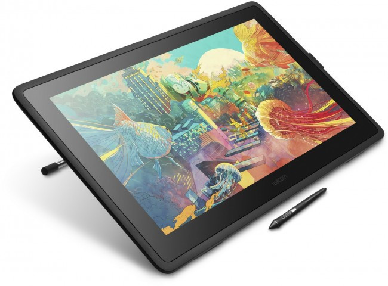

Графічний планшет або Дігітайзер - периферійний пристрій для вводу планшетного типу, призначений для створення, введення та редагування цифрової інформації у графічній формі. Графічний планшет складається з електронного планшета, на якому може бути прямокутне меню та курсор. Він має власну систему координат, і при переміщенні курсора по планшету, координати руху по його поверхні передаються в комп'ютер. Ці дані стають координатами точкового об'єкта або однією з точок або лінії або полігону. Розміри планшета варіюються від А6 до А0. Також, може містити у комплекті перо або стилус та спеціальну рукавичку для руки під час малювання.